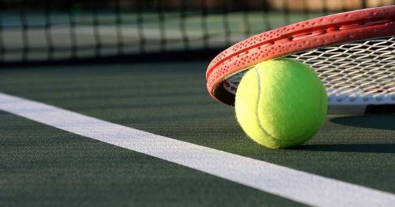

Sporturi care utilizeaza mingea:
- Fotbal
- Tenis
- Golf
- Baschet
Despre Fotbal
Fotbalul este un sport de echipă ce se dispută între două echipe alcătuite din 11 jucători fiecare. La începutul secolului al XXI-lea era jucat de peste 250 de milioane de jucători în peste 200 de țări, ceea ce îl face cel mai popular sport din lume.[1][2][3][4]
Se joacă cu o minge sferică pe un teren dreptunghiular, acoperit cu iarbă, cu câte o poartă la fiecare capăt. Scopul jocului este de a înscrie goluri introducând mingea în poarta adversarului. În afara portarului, ceilalți jucători nu se pot folosi de mâini pentru a manevra mingea. Câștigătorul meciului este echipa care a înscris mai multe goluri la încheierea partidei.
Originile fotbalului se află undeva în urmă cu peste 2000 de ani. În 2004, forul ce guvernează acest sport la nivel mondial FIFA (Fédération Internationale de Football Association)[5] a recunoscut China ca fiind locul de naștere al fotbalului. În jurul anului 200 î.e.n. chinezii jucau un sport asemănător numit cuju. Regulile au evoluat cu timpul, astfel ajungându-se la sportul practicat astăzi.
În primăvara anului 2001, FIFA informa că peste 240 de milioane de oameni joacă regulat fotbal, în peste 200 de țări de pe întreg globul. Regulile sale simple și echipamentul redus și ieftin, necesar practicării fotbalului au contribuit, fără îndoială, la creșterea popularității sale. În multe zone ale lumii, fotbalul naște pasiuni enorme și joacă un rol foarte important în viața fanilor, a comunităților locale și chiar a națiunilor; este deseori numit cel mai popular sport din lume. Este recunoscut în multe țări drept: sportul rege.
Despre Tenis
Tenisul este un sport cu rachetă care poate fi jucat individual împotriva unui singur adversar (simplu) sau între două echipe a câte doi jucători (dublu). Fiecare jucător folosește o rachetă de tenis pentru a lovi o minge de cauciuc acoperită cu fetru peste sau în jurul unui fileu și în terenul adversarului. Obiectivul jocului este să manevreze mingea în așa fel încât adversarul să nu poată juca o întoarcere validă. Jucătorul care nu poate întoarce mingea nu va câștiga nici un punct, în timp ce jucătorul opus va câștiga.
Tenisul este un sport olimpic și se joacă la toate nivelurile societății și la toate vârstele. Sportul poate fi jucat de oricine poate ține o rachetă, inclusiv de persoanele în scaune cu rotile. Jocul modern de tenis a luat naștere în Birmingham, Anglia, la sfârșitul secolului al XIX-lea ca tenis de gazon.[1] Avea conexiuni strânse atât cu diverse jocuri de câmp (gazon), cum ar fi croquet și bowls, cât și cu sportul de rachetă mai vechi numit astăzi tenis adevărat. În cea mai mare parte a secolului al XIX-lea, de fapt, termenul de tenis se referea la tenisul adevărat, nu la tenisul de gazon.

Despre Golf
Golful este un joc sportiv în care competitorii, folosind mai multe tipuri de crose, lovesc mingile și încearcă să le introducă, pe rând, în găurile unui teren de golf, din cât mai puține lovituri.
Acest sport se poate practica de la vârstele cele mai mici până la cele mai înaintate. O rundă standard de golf implică parcurgerea pe jos a unei distanțe de circa 10–15 km, uneori mai mult.
Regulamentul acestui sport nu impune un teren de joc standardizat. Dimpotrivă, jocul se desfășoară pe trasee de golf, fiecare având o formă particulară, conform reliefului pe care este construit. Un detaliu comun este faptul că aceste trasee au în general 9 sau 18 găuri. La nivel internațional și de concurs doar terenurile cu 18 trasee/cupe (golf courses în limba engleză) sunt luate în considerare.
Despre Baschet
Baschetul este unul dintre cele mai răspândite sporturi de echipă din lume; se caracterizează prin finețea, precizia și fantezia exercițiilor tehnice și tactice, prin talia înaltă și calitățile fizice deosebite ale sportivilor, toate acestea implicate într-o luptă sportivă care pretinde spirit de echipă și de sacrificiu, inteligență și rezistență nervoasă.
Punctele sunt marcate prin aruncarea mingii în coș; echipa care acumulează mai multe puncte la sfârșitul jocului câștigă. Mingea poate fi făcută să înainteze pe teren prin driblare sau pasând-o altor coechipieri. Actele fizice nesportive (fault) sunt penalizate și există restricții asupra modului în care este folosită mingea (încălcări).
De-a lungul timpului, în baschet s-au dezvoltat tehnicile obișnuite de ochire, pasare și driblare, dar și de poziționare a jucătorilor, precum și structurile ofensive și defensive. De obicei, jucătorii cei mai înalți vor ocupa centrul sau una dintre cele două poziții de extremă, iar jucătorii mai mici de statură sau cei care au viteză și cele mai bune abilități de mânuire a mingii, vor ocupa poziția de fundaș. În timp ce baschetul competițional are niște reguli bine stabilite, numeroase variante de baschet s-au dezvoltat pentru jocurile ocazionale. În anumite țări, baschetul este un sport popular, cu mulți spectatori.